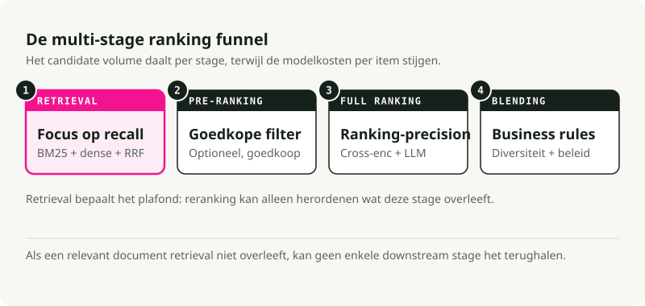
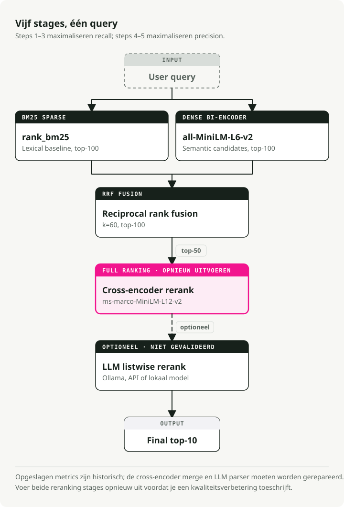
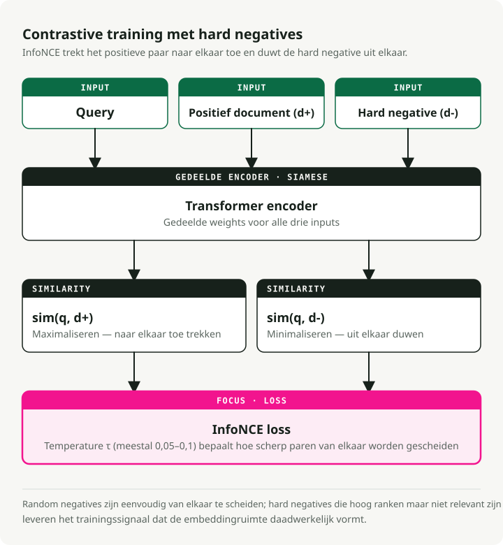
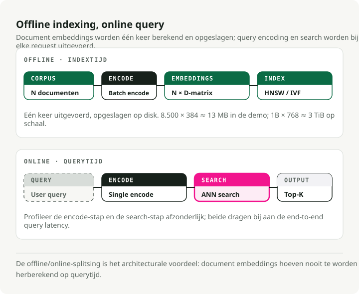
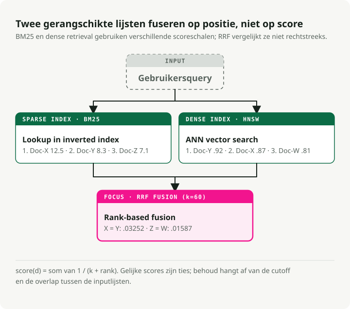
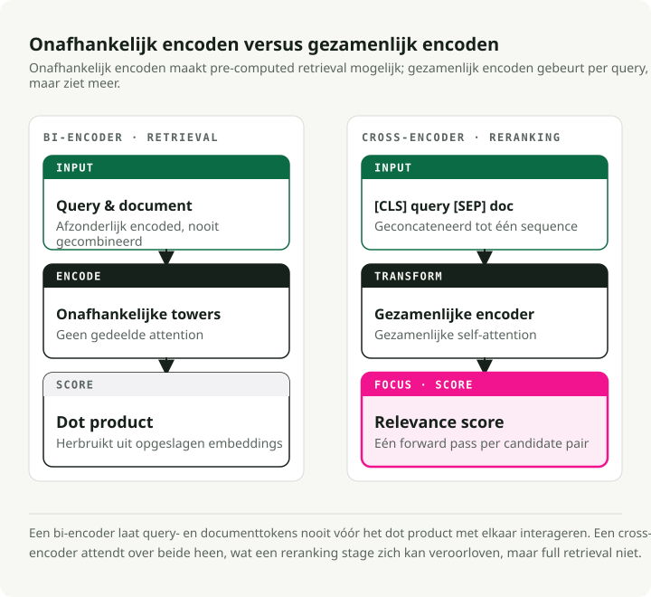
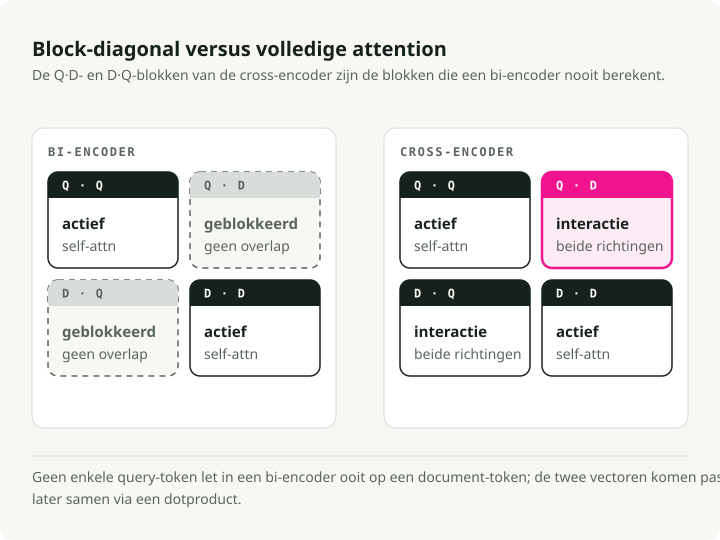
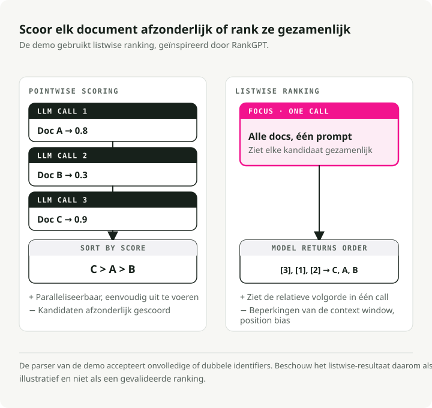
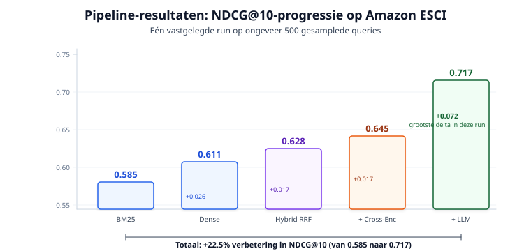
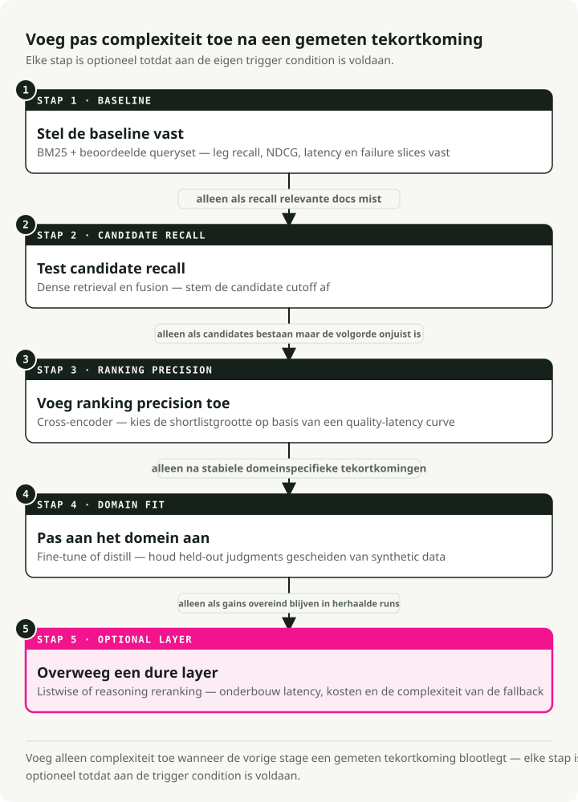

Automatische vertaling
Dit artikel is automatisch vertaald vanuit de oorspronkelijke Engelse versie.
Search Ranking Stack in 2026: BM25, Embeddings, Cross-Encoders en LLM-reranking
Search is al een tijd geen string-matchingprobleem meer. Wanneer iemand "wireless headphones" intypt in een productzoekmachine, verwacht die meer dan items die alleen die twee woorden bevatten. Die persoon wil het beste resultaat op basis van semantische relevantie, productkwaliteit, gebruikersvoorkeuren en beschikbaarheid. De kloof tussen wat BM25 teruggeeft en wat gebruikers daadwerkelijk willen, heeft veranderd hoe zoeksystemen worden gebouwd.
Deze post loopt door een moderne search-ranking-stack: een multi-stage-pipeline die BM25 sparse retrieval, dense semantische embeddings, reciprocal rank fusion, cross-encoder-reranking en LLM listwise-ranking combineert. Ik heb een werkende demo gebouwd die elke fase benchmarkt op de Amazon ESCI product search-dataset, zodat de bijdrage van elke laag zichtbaar wordt in echte cijfers.
TL;DR: Een hybride multi-stage-pipeline is de production-friendly standaardkeuze. Draai BM25 en dense retrieval parallel, fuseer ze met Reciprocal Rank Fusion, rerank de overlevende kandidaten met een cross-encoder en laat een LLM de laatste precisielaag afhandelen. Op de Amazon ESCI-benchmark levert dit een 22.5% NDCG@10-verbetering op ten opzichte van alleen BM25 (0.585 naar 0.717). De LLM-reranker levert de grootste afzonderlijke sprong (+0.072).
Hoe we hier zijn gekomen
Search-ranking is grofweg door drie fasen gegaan, waarbij elke fase een specifieke beperking van de vorige oploste. De moderne stack is pas logisch als je het pad ernaartoe hebt gezien.
BM25 en lexicale retrieval
Decennialang was BM25 de standaard. Het is een probabilistisch model dat documenten scoort op basis van de frequentie van querytermen in het document, genormaliseerd naar documentlengte en inverse document frequency (IDF).
BM25 is sterk in exacte keyword-matching. Zoeken naar een specifieke foutcode, product-SKU of HTTP-statuscode werkt omdat het systeem alleen letterlijke tokenoverlap nodig heeft. Het nadeel is het vocabulary mismatch-probleem: een query voor "cheap laptop" mist documenten over "budget notebook computer" omdat de woorden niet overeenkomen. BM25 heeft geen begrip van semantische intentie.
Dat gezegd hebbende is BM25 een sterke baseline. Het scoort gemiddeld 0.429 nDCG@10 over de 18 datasets van de BEIR-benchmark en verslaat nog steeds sommige neurale modellen op argumentative retrieval-taken zoals Touche-2020.
Dense retrieval en embeddings
BERT en de Transformer brachten dense retrieval. In plaats van keywords te matchen, map je zowel queries als documenten naar een gedeelde hoog-dimensionale vectorruimte (meestal 768 of 1024 dimensies). Relevantie wordt cosine similarity tussen twee vectoren.
De bi-encoder-architectuur (of "two-tower") verwerkt query en document onafhankelijk via aparte encoder towers en produceert embeddings met vaste lengte. Documentvectoren kun je offline vooraf berekenen en indexeren, en daarna snel retrieven via Approximate Nearest Neighbor (ANN)-algoritmen. Zo komen "cheap laptop" en "budget notebook" dicht bij elkaar te liggen in vectorruimte.
Onder de motorkap gebruiken bi-encoders een Siamese-architectuur (Sentence-BERT, Reimers & Gurevych, EMNLP 2019): beide towers delen dezelfde Transformer-gewichten. Elke tower verwerkt zijn inputtekst en mean-poolt daarna de hidden states op tokenniveau naar één vector met vaste lengte (384 of 768 dimensies zijn gebruikelijk). Door weight sharing komen queries en documenten in dezelfde semantische ruimte terecht, en dat maakt cosine similarity überhaupt betekenisvol.
Deze modellen worden getraind met contrastive learning, meestal met de InfoNCE-loss. Gegeven een batch van (query, positive_document)-paren maximaliseert de objective sim(query, positive_doc) en minimaliseert sim(query, negative_docs). Negatieven komen uit de positives van andere queries in dezelfde batch (in-batch negatives). Een temperatuurparameter \(\\tau\) bepaalt hoe scherp de verdeling is: lagere waarden dwingen het model hardere onderscheidingen te maken tussen positives en negatives.
De grootste hefboom voor bi-encoder-prestaties is de kwaliteit van de trainingsdata. Modellen starten met (query, positive_document)-paren uit datasets zoals MS MARCO, en worden daarna uitgebreid met hard negatives — documenten die het huidige model hoog rankt maar die in werkelijkheid niet relevant zijn. Willekeurige negatives zijn te makkelijk en geven het model niets om van te leren. Hard negatives dwingen het subtiele verschillen te leren. Het SimANS-framework (Zhou et al., EMNLP 2022) formaliseert dit: sluit makkelijke negatives uit (te laag gerankt) en mogelijke false negatives (te hoog gerankt), en train op de "harde middenzone".
De prijs is de representation bottleneck. Bi-encoders comprimeren alle semantische nuance in één vector met vaste grootte, waardoor ze vaak fijnmazige interacties missen tussen specifieke querytermen en specifieke documentinhoud.
Cross-encoders en LLM's
Cross-encoders (Nogueira & Cho, 2019) voeren query en document samen in één Transformer als een geconcateneerde sequentie ([CLS] Query [SEP] Document), zodat elk querytoken via volledige self-attention naar elk documenttoken kan attenden. Die diepe interactie pikt nuance op die onafhankelijke encodering mist.
LLM-reranking gaat nog verder. Een large language model werkt als een zero-shot listwise-ranker — feitelijk een menselijke beoordelaar die kan redeneren waarom het ene document beter is dan het andere. RankGPT (Sun et al., EMNLP 2023 Outstanding Paper) liet zien dat GPT-4 als zero-shot listwise-reranker supervised methoden evenaart of verslaat.
De precisie is sterk. De kosten ook. Je kunt scores niet vooraf berekenen, en inference is 100x trager dan bi-encoder-retrieval. Die kost bepaalt het architectuurpatroon dat je in moderne search ziet: de multi-stage-funnel.
De multi-stage-funnel
Een dure cross-encoder of LLM over miljoenen documenten draaien is niet haalbaar, dus moderne search-stacks gebruiken een funnel. Elke fase filtert de candidate pool verder terug, terwijl de modelcomplexiteit toeneemt.
Een single-stage search is óf te traag (complexe modellen op alles) óf te onnauwkeurig (eenvoudige modellen overal). De funnel zit daartussenin en is de standaard productieopzet op schaal.

| Stage | Candidate Pool | Primary Objective | Model Complexity | Latency Budget |
|---|---|---|---|---|
| Retrieval | 10^9 - 10^12 | Maximum Recall | Low (BM25, Bi-Encoders) | < 50ms |
| Pre-Ranking | 10^4 - 10^5 | Efficient Filtering | Medium (Two-Tower, GBDT) | < 100ms |
| Full Ranking | 10^2 - 10^3 | Maximum Precision | High (Cross-Encoders, LLMs) | < 500ms |
| Blending | 10^1 - 10^2 | Diversity and Safety | Rules and Multi-Objective | < 20ms |
Retrieval bepaalt het plafond en reranking optimaliseert daarbinnen. Als een relevant document retrieval niet overleeft, kan geen downstream-model het nog terughalen.
De demo: een five-stage-pipeline
Om dit concreet te maken heb ik een search-ranking-stack-demo gebouwd die een five-stage-pipeline draait op de Amazon ESCI product search-benchmark. Elke fase wordt afzonderlijk gemeten zodat je ziet waar de winst echt vandaan komt.

De pipeline:
- BM25 Sparse Retrieval — lexicale baseline (rank_bm25)
- Dense Bi-Encoder Retrieval — semantische search (all-MiniLM-L6-v2)
- Hybrid RRF Fusion — combineert sparse en dense resultaten
- Cross-Encoder Reranking — fijnmazige relevantiescore (ms-marco-MiniLM-L-12-v2)
- LLM Listwise Reranking — final ranking met reasoning (Ollama / Claude / local)
Stap 1--3 vormen de retrieval-fase van de funnel (maximaliseer recall); stap 4--5 vormen de full ranking-fase (maximaliseer precision). De demo slaat pre-ranking en blending over. Bij ~8.500 documenten kun je alle hybride resultaten direct naar reranking sturen.
Quick Start
git clone https://github.com/slavadubrov/search-ranking-stack.git
cd search-ranking-stack
uv sync
# Download and sample ESCI dataset (~2.5GB download, ~5MB sample)
uv run download-data
# Run the full pipeline (without LLM reranking)
uv run run-all
# Run with LLM reranking via Ollama
uv run run-all --llm-mode ollama
De dataset: Amazon ESCI
De demo gebruikt de Amazon Shopping Queries Dataset (ESCI) uit KDD Cup 2022 — een echte product search-benchmark met graded relevance-labels op vier niveaus:
| Label | Gain | Meaning | Example (Query: "wireless headphones") |
|---|---|---|---|
| Exact (E) | 3 | Satisfies all query requirements | Sony WH-1000XM5 Wireless Headphones |
| Substitute (S) | 2 | Functional alternative | Wired headphones with Bluetooth adapter |
| Complement (C) | 1 | Related useful item | Headphone carrying case |
| Irrelevant (I) | 0 | No meaningful relationship | USB charging cable |
Graded relevance is belangrijk omdat je daardoor NDCG (Normalized Discounted Cumulative Gain) kunt gebruiken, waarmee je onderscheid maakt tussen een "perfecte" ranking en een "slechts adequate" ranking. Binaire metrics behandelen beide als even relevant en kunnen verschillende relevantieniveaus op dezelfde positie niet onderscheiden.
Ik heb ~500 "harde" queries gesampled (de small_version-flag in ESCI) met ~8.500 producten en ~12.000 judgments. Klein genoeg om in minuten op een laptop te draaien, groot genoeg om statistisch betekenisvolle resultaten te geven.
Retrieval: hybride search
De taak van de retrieval-laag is recall maximaliseren — het net zo wijd mogelijk uitgooien zodat niets relevants erdoor glipt.
BM25: de lexicale baseline
BM25 scoort documenten op termoverlap met de query, met verzadiging van termfrequentie en normalisatie van documentlengte:
Waar \(\\text{IDF}(t)\) de inverse document frequency is van term \(t\), \(tf(t,d)\) de termfrequentie in document \(d\), \(|d|\) de documentlengte en \(\\text{avgdl}\) de gemiddelde documentlengte over het corpus. Twee parameters zijn belangrijk: \(k_1\) (meestal 1.2--2.0) bepaalt TF-saturatie — hoe snel herhaalde termen geen extra waarde meer toevoegen — en \(b\) (meestal 0.75) bepaalt normalisatie op documentlengte.
De implementatie is kort. Gewone whitespace-tokenization met rank_bm25:
# src/search_ranking_stack/stages/s01_bm25.py
from rank_bm25 import BM25Okapi
def run_bm25(data: ESCIData, top_k: int = 100):
doc_ids = list(data.corpus.keys())
tokenized_corpus = [text.lower().split() for text in data.corpus.values()]
bm25 = BM25Okapi(tokenized_corpus)
results = {}
for query_id, query_text in data.queries.items():
scores = bm25.get_scores(query_text.lower().split())
top_indices = np.argsort(scores)[::-1][:top_k]
results[query_id] = {doc_ids[idx]: float(scores[idx]) for idx in top_indices}
return results
BM25 komt uit op Recall@100 van 0.741 — 74% van de relevante producten verschijnt ergens in de top 100. Niet slecht voor een puur lexicale methode, maar 26% van de relevante items is onzichtbaar voor elke downstream-fase.
Dense Bi-Encoder: semantische retrieval
De bi-encoder mapt queries en documenten onafhankelijk naar een gedeelde embeddingruimte:
# src/search_ranking_stack/stages/s02_dense.py
from sentence_transformers import SentenceTransformer
model = SentenceTransformer("sentence-transformers/all-MiniLM-L6-v2")
# Encode corpus once, cache to disk
corpus_embeddings = model.encode(
doc_texts,
batch_size=128,
normalize_embeddings=True, # Cosine sim = dot product
convert_to_numpy=True,
)
# At query time: encode query, compute dot product
query_embeddings = model.encode(query_texts, normalize_embeddings=True)
similarity_matrix = np.dot(query_embeddings, corpus_embeddings.T)
Met genormaliseerde embeddings reduceert cosine similarity tot een dot product — één matrixvermenigvuldiging retrievet alle queries in één keer. Het 22M-parameter-model all-MiniLM-L6-v2 draait comfortabel op CPU en brengt Recall@100 naar 0.825, een verbetering van 11% ten opzichte van BM25.
Hoe bi-encoders goede representaties leren
Bi-encoder-training verloopt meestal in twee fasen. Eerst wordt het model pre-trained op Natural Language Inference (NLI)- en Semantic Textual Similarity (STS)-datasets, die algemene semantische representaties aanleren — het model leert dat "a cat sits on a mat" en "a feline rests on a rug" vergelijkbare embeddings moeten hebben. Daarna wordt het fine-tuned op retrieval-specifieke data zoals MS MARCO, waar het leert dat een search-query en de relevante passage dichter bij elkaar moeten liggen dan de query en irrelevante passages.
Het kritieke ingrediënt in de tweede fase is hard negative mining. Willekeurige negatives (bijvoorbeeld een document over koken gekoppeld aan een query over headphones) zijn triviaal eenvoudig te onderscheiden — het model leert er niets van. In plaats daarvan gebruik je het huidige model zelf om documenten te vinden die het hoog rankt maar die niet echt relevant zijn.
De SimANS-aanpak (Simple Ambiguous Negatives Sampling) formaliseert dit: rank alle documenten met de huidige bi-encoder, sluit daarna makkelijke negatives uit (te laag gerankt — het model beheerst die al) en mogelijke false negatives (te hoog gerankt — mogelijk relevant maar unlabeled). Die "harde middenzone" levert het maximale leersignaal op.
# What a training triplet looks like after hard negative mining
training_triplet = {
"query": "wireless noise canceling headphones",
"positive": "Sony WH-1000XM5 Wireless Noise Cancelling Headphones",
"negative": "Sony headphone replacement ear pads", # Hard negative: same brand, related product, but wrong intent
}
# The bi-encoder must learn that "ear pads" is NOT what the user wants,
# even though it shares many tokens with the positive document.
De contrastive loss-functie (InfoNCE) verbindt dit alles. Voor elke query \(q\) met positief document \(d^+\) en een set negatieve documenten \(\\{d^-_1, \\ldots, d^-_n\\}\):
Waar \(\\text{sim}(q, d)\) de cosine similarity is tussen query- en documentembeddings, en \(\\tau\) de temperatuurparameter (meestal 0.05--0.1) die bepaalt hoe scherp de verdeling is — lagere waarden maken de loss gevoeliger voor hard negatives. Het is in feite een softmax cross-entropy: duw de similarity van het positieve paar omhoog ten opzichte van alle negatives. Wanneer \(\\tau\) klein is, leveren zelfs kleine verschillen in similarity grote gradients op, wat het model dwingt fijnmaziger onderscheid te maken.

Bi-encoder-embeddings serveren op schaal
Het architectonische voordeel van bi-encoders is de nette offline/online-split. Alle documentembeddings worden één keer berekend op index-time en opgeslagen in een vectorindex. Op query-time heeft alleen de query een enkele forward pass door de encoder nodig (~5ms), gevolgd door een ANN-search over vooraf berekende embeddings (~10ms). Die asymmetrie maakt dense retrieval praktisch op schaal.
In de demo is de rekensom bescheiden: 8.500 documenten \(\\times\) 384 dimensies \(\\times\) 4 bytes per float = ~13 MB embeddings. Op productieschaal worden de cijfers minder bescheiden: 1 miljard documenten met embeddings van 768 dimensies vragen ~3 TiB opslag. Daar komen quantization (32-bit floats comprimeren naar 8-bit integers), product quantization (vectoren opdelen in subruimten) en SSD-backed indexen zoals DiskANN in beeld. In de sectie Vector Indexing: HNSW vs. IVF komen de indexalgoritmen aan bod.

Waarom hybride: BM25 en dense hebben complementaire failure modes
Geen van beide methoden is op zichzelf genoeg. BM25 wint op eigennamen, specifieke product-SKU's en foutcodes — "iPhone 15 Pro Max 256GB" heeft exacte token-matching nodig. Dense retrieval wint bij vocabulary mismatch — "cheap laptop" matchen met "budget notebook computer" vereist semantisch begrip.
De standaardoplossing is hybride search: draai beide retrievalmethoden parallel en fuseer daarna de resultaten.
Reciprocal Rank Fusion (RRF)
De uitdaging bij hybride search is dat BM25 en dense retrieval scores op totaal verschillende schalen produceren. BM25-scores zijn onbegrensd (0 tot 100+), en cosine similarity is begrensd tussen -1 en 1. Een eenvoudige lineaire combinatie moet continu worden getuned om zinnig te blijven.

Reciprocal Rank Fusion (Cormack et al., 2009) laat ruwe scores volledig vallen en gebruikt alleen de rank-positie:
Waar \(k\) een smoothing constant is (meestal 60) die dominantie van outliers afzwakt. RRF beloont items die in beide methoden consequent hoog ranken, zelfs als één systeem ze veel hoger scoort dan het andere. Doordat het rank-based werkt, verdwijnt het schaalprobleem.
De implementatie:
# src/search_ranking_stack/stages/s03_hybrid_rrf.py
def reciprocal_rank_fusion(ranked_lists, k=60, top_k=100):
fused_results = {}
for query_id in all_query_ids:
rrf_scores = defaultdict(float)
for results in ranked_lists:
sorted_docs = sorted(results[query_id].items(),
key=lambda x: x[1], reverse=True)
for rank, (doc_id, _score) in enumerate(sorted_docs, start=1):
rrf_scores[doc_id] += 1.0 / (k + rank)
sorted_rrf = sorted(rrf_scores.items(),
key=lambda x: x[1], reverse=True)[:top_k]
fused_results[query_id] = dict(sorted_rrf)
return fused_results
Hybride RRF komt uit op Recall@100 van 0.842 en NDCG@10 van 0.628 — beter dan zowel BM25 (0.585) als Dense (0.611) afzonderlijk. Documenten hoeven maar in één methode goed te ranken om de fusie te overleven.
Cross-encoder-reranking
Met 100 hybride kandidaten per query kun je een duurder model betalen. De cross-encoder verwerkt query en document samen door één Transformer, met volledige cross-attention tussen alle tokens.

Waarom cross-attention belangrijk is
Het echte verschil zit in de attention matrix. In een bi-encoder is attention block-diagonal: querytokens attenden alleen naar andere querytokens, en documenttokens alleen naar andere documenttokens. De twee representaties komen elkaar nooit op tokenniveau tegen — ze raken elkaar pas aan het eind via een dot product. Een cross-encoder berekent de volledige attention matrix, waarbij elk querytoken naar elk documenttoken attendeert en andersom. Die cross-attention maakt diepe interactie op tokenniveau mogelijk.

In een bi-encoder produceert de query "apple" steeds dezelfde embedding. Die wordt onafhankelijk gecodeerd, nog voordat er een document is gezien. Een cross-encoder ziet query en document gelijktijdig en kan ambiguïteit dus in context oplossen. De voordelen gaan veel verder dan polysemie:
- Negatie: een query voor "headphones that are not wireless" — bi-encoder-embeddings voor "not wireless" zijn bijna identiek aan "wireless" omdat de negatie de mean-pooled vector nauwelijks verschuift. Een cross-encoder ziet dat het token "not" direct naar "wireless" attendeert en scoort wired headphones correct hoger.
- Kwalificatie: een query voor "laptop under \\(500" — de prijsconstraint wijzigt relevantie. Een cross-encoder kan van "\\\)500" attenden naar de prijs in de productbeschrijving en controleren of aan de constraint wordt voldaan.
De cross-encoder-input is geformatteerd als [CLS] query tokens [SEP] document tokens [SEP]. [CLS] is een classification token waarvan de laatste hidden state via een linear head naar één relevantiescore gaat. Segment embeddings onderscheiden querytokens van documenttokens, en [SEP] markeert de grens tussen de segmenten.
Hoe cross-encoders worden getraind
Cross-encoder-training is conceptueel eenvoudiger dan bi-encoder-training. Het model krijgt triples van (query, document, relevance_label) en leert het label te voorspellen via gewone supervised learning — zonder contrastive loss.
# Cross-encoder training data format
training_example = {
"query": "wireless headphones",
"document": "Sony WH-1000XM5 Wireless Headphones",
"label": 1.0, # Relevant
}
# Forward pass: [CLS] hidden state → Linear layer → sigmoid → score
# Loss: binary cross-entropy between predicted score and label
De classification head staat boven op de laatste hidden state van het token [CLS]: een enkele linear layer mapt de hidden dimension naar een scalar, gevolgd door een sigmoid. Voor binaire relevancelabels werkt binary cross-entropy loss; voor graded labels zoals de vierniveauschaal van ESCI werkt MSE-loss beter omdat die de ordinale relatie tussen de niveaus behoudt.
Hard negative mining is nog belangrijker voor cross-encoders dan voor bi-encoders. Cross-encoders zijn duur om te trainen — elk trainingsexample vereist een volledige forward pass door de geconcateneerde sequentie — dus je kunt geen compute verspillen aan triviaal makkelijke negatives. Het praktische recept: gebruik een bi-encoder om voor elke trainingsquery de top-K-kandidaten te retrieven, en trek hard negatives uit specifieke rank-ranges (bijv. ranks 10–100). Zo krijgt de cross-encoder voorbeelden waarin het onderscheiden van relevant en irrelevant echt diepe tokeninteractie vereist.
# src/search_ranking_stack/stages/s04_cross_encoder.py
from sentence_transformers import CrossEncoder
model = CrossEncoder("cross-encoder/ms-marco-MiniLM-L-12-v2")
def run_cross_encoder(data, hybrid_results, top_k_rerank=50):
for query_id, query_text in data.queries.items():
candidates = list(hybrid_results[query_id].items())[:top_k_rerank]
# Form (query, document) pairs for joint encoding
pairs = []
doc_ids = []
for doc_id, _ in candidates:
doc_text = data.corpus.get(doc_id, "")[:2048]
pairs.append([query_text, doc_text])
doc_ids.append(doc_id)
# Score all pairs with full cross-attention
scores = model.predict(pairs, batch_size=64)
# Rerank by cross-encoder score
scored_docs = sorted(zip(doc_ids, scores),
key=lambda x: x[1], reverse=True)
reranked_results[query_id] = {
doc_id: float(score) for doc_id, score in scored_docs
}
Het 33M-parameter-model ms-marco-MiniLM-L-12-v2 haalt gemiddeld ongeveer 100ms per query op CPU voor 50 kandidaten. NDCG@10 springt naar 0.645 — een nette +0.017 bovenop hybride retrieval.
De speed-quality tradeoff
Waarom niet overal cross-encoders gebruiken? Omdat pre-computation onmogelijk is. Documentembeddings van bi-encoders zijn query-onafhankelijk, dus je berekent ze één keer en slaat ze op. De output van een cross-encoder hangt af van query én document samen. De relevantiescore voor "wireless headphones" gecombineerd met een Sony-product komt voort uit de volledige cross-attention tussen precies die tokens. Je kunt die score niet cachen of hergebruiken voor een andere query.
Het kostenverschil is groot. Een bi-encoder-retrieval heeft 1 forward pass nodig (om de query te encoden) plus N dot products tegen vooraf berekende documentembeddings — die dot products zijn triviaal goedkoop. Een cross-encoder heeft N volledige Transformer-forward passes nodig, elk over de geconcateneerde query + document-sequentie met \(O(L^2)\)-kosten voor gecombineerde sequentielengte \(L\). Voor 50 kandidaten met een gemiddelde gecombineerde lengte van 128 tokens zijn dat 50 afzonderlijke forward passes door 12 Transformer-lagen. Bij 100.000 kandidaten praat je over minuten op een moderne GPU tegenover ~17ms voor een bi-encoder.
De regel die de demo bevestigt: Recall@100 blijft vlak op 0.842 door beide reranking-fasen heen. Reranking kan resultaten herordenen maar nooit documenten toevoegen. Retrieval bepaalt het plafond.
LLM listwise-reranking
De laatste fase gebruikt een LLM voor listwise reranking. In plaats van elk document onafhankelijk te scoren (pointwise), ziet de LLM alle top-10-resultaten tegelijk en geeft een complete ranking terug. Deze aanpak, geïnspireerd door RankGPT, laat het model producten onderling vergelijken — iets wat pointwise-modellen niet kunnen.

De listwise-prompt
De prompt-template vraagt de LLM rekening te houden met de ESCI-relevantiehiërarchie:
# src/search_ranking_stack/stages/s05_llm_rerank.py
def _create_listwise_prompt(query, documents, max_words=200):
n = len(documents)
doc_texts = []
for i, (doc_id, doc_text) in enumerate(documents, start=1):
words = doc_text.split()[:max_words]
doc_texts.append(f"[{i}] {' '.join(words)}")
return (
f"I will provide you with {n} product listings, each indicated by "
f"a numerical identifier [1] to [{n}]. Rank the products based on "
f'their relevance to the search query: "{query}"\n\n'
"Consider:\n"
"- Exact matches should rank highest\n"
"- Substitutes should rank above complements\n"
"- Irrelevant products should rank lowest\n\n"
f"{chr(10).join(doc_texts)}\n\n"
"Output ONLY a comma-separated list of identifiers: [3], [1], [2], ...\n"
"Do not explain your reasoning."
)
Drie uitvoeringsmodi
De demo ondersteunt drie backends voor LLM-reranking:
| Mode | Model | How It Runs |
|---|---|---|
ollama |
llama3.2:3b (configurable) |
Local via Ollama API |
api |
claude-haiku-4-5-20251001 |
Anthropic API |
local |
Qwen/Qwen2.5-1.5B-Instruct |
HuggingFace Transformers |
Parsen en fallback
LLM-outputs zijn niet deterministisch, dus robuust parsen en een fallback-pad zijn belangrijk:
def _parse_ranking(output: str, n: int) -> list[int] | None:
"""Parse LLM output to extract ranking order."""
matches = re.findall(r"\[(\d+)\]", output)
if not matches:
return None
positions = [int(m) - 1 for m in matches]
# Pad with remaining positions if LLM returned partial output
if len(positions) < n:
seen = set(positions)
for i in range(n):
if i not in seen:
positions.append(i)
return positions[:n]
Als het parsen volledig mislukt, valt het systeem terug op de cross-encoder-volgorde. Elke productie-LLM-integratie heeft zo'n fallback-pad nodig — je wilt niet dat een parse failure resultaten onder het niveau van de vorige fase laat zakken.
Resultaten: elke fase verdient zijn plek
Hier zijn de resultaten van het draaien van de volledige pipeline op ~500 ESCI-queries:

| Stage | NDCG@10 | MRR@10 | Recall@100 | NDCG Delta |
|---|---|---|---|---|
| BM25 | 0.585 | 0.812 | 0.741 | -- |
| Dense Bi-Encoder | 0.611 | 0.808 | 0.825 | +0.026 |
| Hybrid (RRF) | 0.628 | 0.834 | 0.842 | +0.017 |
| + Cross-Encoder | 0.645 | 0.860 | 0.842 | +0.017 |
| + LLM Reranker | 0.717 | 0.901 | 0.842 | +0.072 |
Belangrijkste observaties
Hybride search verslaat beide methoden afzonderlijk. RRF NDCG (0.628) ligt boven zowel BM25 (0.585) als Dense (0.611). Sparse en dense retrieval hebben complementaire failure modes, en de combinatie herstelt documenten die door één van beide alleen gemist zouden worden.
Recall wordt vastgezet bij retrieval. Recall@100 blijft vlak op 0.842 door beide reranking-fasen heen. Rerankers herordenen, ze voegen niets toe. Wil je hogere recall, verbeter dan de retrieval-laag.
De LLM-reranker levert de grootste afzonderlijke sprong. De winst van +0.072 NDCG@10 van cross-encoder naar LLM-reranker is de grootste single-stage-verbetering in de pipeline. De LLM kan redeneren over productrelevantie — begrijpen dat een "wireless headphone stand" een complement is, geen match — en dat soort onderscheid missen statistische modellen vaak.
Dense verslaat BM25 op deze dataset. Het product-searchdomein van ESCI heeft zware vocabulary mismatch (gebruikers zeggen "cheap laptop"; producten zeggen "budget notebook computer"), en dat speelt semantische retrieval in de kaart.
Evaluatie: meten wat ertoe doet
De demo gebruikt drie complementaire metrics. Elke metric bekijkt de ranking vanuit een andere hoek:
NDCG@10 (primaire metric)
Normalized Discounted Cumulative Gain meet de kwaliteit van de top-10-ranking met graded relevance. Het beloont het plaatsen van zeer relevante documenten bovenaan met een logaritmische discount:
NDCG is de enige metric die de graded relevance op vier niveaus van ESCI volledig benut — een systeem dat een Exact-match op positie 1 plaatst scoort hoger dan een systeem dat daar een Substitute plaatst. Daarom is dit de primaire metric voor algemene searchkwaliteit.
MRR@10 (user experience)
Mean Reciprocal Rank meet hoe snel de gebruiker het eerste relevante resultaat vindt. Als het eerste relevante resultaat op positie 1 staat, is MRR = 1.0. Op positie 3 is de reciprocal rank 0.333. Het vangt "time to satisfaction" — ook als NDCG hoog is, geven gebruikers vooral om het eerste goede resultaat.
Recall@100 (retrievaldekking)
Recall meet welk deel van alle relevante documenten ergens in de top 100 verschijnt. Het is een ceiling metric — als een relevant document niet wordt retrieved, kan geen reranker dat herstellen.
Vector-indexing: HNSW vs. IVF
Dense embeddings worden pas nuttig op schaal zodra je een Approximate Nearest Neighbor (ANN)-index hebt. De demo gebruikt brute-force cosine similarity (prima bij ~8.500 documenten), maar productiesystemen hebben gespecialiseerde indexen nodig.
HNSW (Hierarchical Navigable Small World)
HNSW (Malkov & Yashunin, 2016) is een veelgebruikte keuze voor productieomgevingen die sub-100ms-latency nodig hebben. Het bouwt een gelaagde graaf waarin hogere lagen "express"-verbindingen bieden voor grove navigatie en lagere lagen dichte verbindingen voor precieze verfijning. Belangrijke tuningparameters: M (verbindingen per node, meestal 16–64) en efSearch (beam width op query-time — gebruik minstens 512 voor recall-doelen boven 0.95).
De zwakte van HNSW is het tombstone-probleem: wanneer records worden verwijderd, laten ze spooknodes achter in de graaf. Na verloop van tijd creëren die onbereikbare regio's, waardoor delen van je data effectief onzichtbaar worden voor search. Dat is geen theoretische zorg — zelfs moderne vectordatabases zoals Qdrant, die HNSW exclusief gebruikt, rapporteren verslechterde searchkwaliteit na veel deletions, wat volledige index-rebuilds vereist. Als je dataset veel updates of deletions heeft, plan dan periodieke reindexing of overweeg IVF-gebaseerde alternatieven.
IVF (Inverted File)
IVF-indexen partitioneren de vectorruimte in Voronoi-cellen met k-means-clustering. Op query-time worden alleen de nprobe-clusters het dichtst bij het query-centroid gescand. IVF is geheugenefficiënter en beter bestand tegen dynamische datasets — deletions zijn schoon, zonder onbereikbare nodes. Build-tijden zijn 4x–32x sneller dan HNSW.
Voor extreme schaal comprimeert IVF_RaBitQ (Gao & Long, SIGMOD 2024) floating-pointvectoren tot representaties van één bit. In hoog-dimensionale ruimte draagt het teken van een coördinaat (+/-) genoeg hoekinformatie voor similarity-berekening.
| Feature | HNSW (Graph) | IVF (Cluster) |
|---|---|---|
| Query Speed | Exceptional | Moderate |
| Build Speed | Slow | Fast (4x-32x faster) |
| Memory | High (RAM-bound) | Low |
| Deletions | Problematic (tombstones) | Clean |
| Best For | Static, latency-critical | Dynamic, memory-constrained |
Praktische guidance van Uber: Zij optimaliseerden ANN-retrieval door de searchparameter K op shard-niveau te verlagen van 1.200 naar 200, wat 34% minder latency en 17% CPU-besparing opleverde met minimale impact op recall.
De LLM-laag: verder dan reranking
LLM's verbeteren niet alleen de reranking-fase. Ze veranderen ook de rest van de search-pipeline.
Query understanding
LLM-gedreven query expansion en rewriting pakken vocabulary mismatch aan nog vóór retrieval begint. Query2doc (Wang et al., EMNLP 2023) genereert pseudo-documenten via few-shot LLM-prompting en concateneert die met de originele queries, wat 3–15% BM25-verbetering oplevert op MS MARCO zonder enige fine-tuning. De LLM "vult" vocabulaire aan die de korte query van de gebruiker niet expliciet bevat.
Praktische patronen: abbreviation expansion, entity enrichment, sub-query decomposition voor multi-hop reasoning en RAG-Fusion — meerdere queryvarianten genereren en resultaten combineren via RRF.
LLM-as-a-judge voor evaluatie
LLM's zijn op veel plekken nu de standaard voor beoordeling van searchkwaliteit. Het TALEC-framework behaalt meer dan 80% correlatie met menselijke beoordelingen met domeinspecifieke evaluatiecriteria. De aanpak van Pinterest is de moeite waard: Llama-3-8B is de offline teacher die relevantielabels op vijf niveaus genereert voor miljarden search impressions, en verslaat multilingual BERT-base met 12.5% in nauwkeurigheid; die labels worden daarna gedistilleerd naar lichte productiemodellen.
Dingen die LLM-evaluatie betrouwbaarder maken:
- Prompt modellen om hun ratings uit te leggen (dat verbetert alignment met mensen sterk)
- Gebruik panels van diverse modellen om variatie te verminderen ("replacing judges with juries")
- Houd rekening met central tendency bias in door LLM's gegenereerde labels
Knowledge distillation
Een volledige LLM voor elke query draaien is veel te duur. De oplossing is distillation:
- Gebruik een krachtige LLM (de teacher) om duizenden trainingsqueries te reranken
- Train een kleine, snelle cross-encoder (de student, ~100M–200M parameters) om de rankingdistributie van de LLM na te bootsen
- Resultaat: bijna-LLM-prestaties bij ~10ms latency
InRanker distilleert MonoT5-3B naar modellen van 60M en 220M parameters — een 50x kleinere omvang met competitieve prestaties. De aanpak Rank-Without-GPT levert open-source listwise-rerankers van 7B die 97% van de effectiviteit van GPT-4 halen met QLoRA fine-tuning.
Eén cost-optimization-opmerking van ZeroEntropy: 75 kandidaten reranken en alleen de top 20 naar GPT-4o sturen verlaagt API-kosten met 72% — van $162K/dag naar $44K/dag bij 10 QPS — terwijl 95% van de antwoordnauwkeurigheid behouden blijft.
Personalisatie: wie zoekt doet ertoe
Generieke relevantie brengt je maar tot op zekere hoogte. Een zoekopdracht naar "apple" zou iPhones moeten teruggeven voor een techliefhebber en appelrecepten voor iemand die net kookcontent heeft bekeken.
Two-tower-modellen voor personalisatie
Een veelgebruikte retrieval-architectuur voor personalisatie gebruikt een two-tower embedding model: de query tower encodeert search-queries plus gebruikersprofiel naar embeddings; de item tower encodeert items plus metadata. Dot-product similarity bepaalt relevantie, waardoor je in sub-100ms ANN-territory blijft.
Airbnb pionierde met listing embeddings via Word2Vec-achtige training op kliksessies — hun Search- en Similar Listings-kanalen samen sturen 99% van de booking conversions aan. Pinterest's OmniSearchSage (WWW 2024) leert gezamenlijk uniforme query-, pin- en productembeddings, goed voor >8% relevantieverbetering bij 300K requests/seconde. Uber's Two-Tower Embeddings drijven Eats Homefeed-retrieval aan in ~100ms.
Position bias: de stille vervorming
Gebruikers klikken vaker op hoger gerankte items ongeacht hun echte relevantie, wat een zichzelf versterkende feedbacklus creëert. De meest praktische productieoplossing (PAL, Guo et al., RecSys 2019): neem positie op als trainingsfeature en zet vervolgens position=1 voor alle items tijdens serving. Dat debiast het model zonder de klikdistributie expliciet te hoeven modelleren.
De domeinkloof overbruggen
Een veelgemaakte fout in search-strategie is aannemen dat een model getraind op algemene webdata (zoals MS MARCO) goed zal werken op een gespecialiseerd domein. Dit is het out-of-domain (OOD)-probleem.
Synthetische datageneratie
LLM's lossen het tekort aan gelabelde data op via Generative Pseudo-Labeling (GPL, InPars):
- Neem je domeinspecifieke documentcorpus
- Prompt een LLM met "Generate a search query that this document would answer"
- Gebruik de synthetische (query, document)-paren om je retriever en reranker te fine-tunen
Deze techniek heeft grote verbeteringen opgeleverd op domeinspecifieke taken waar echte gebruikersqueries schaars zijn. Het is de praktische brug tussen niveau 2 en niveau 3 op het maturity path.
RMSC: soft tokens voor domeinadapatie
De RMSC-strategie (Robust Multi-Supervision Combining) introduceert soft tokens — domeintokens [S1], [T1] en relevantietokens [H1], [W1] — die het model vertellen welk domein het verwerkt en hoe zeker het supervision-signaal is. Trainen met deze tokens slaat domeinspecifieke kennis op in de token embeddings in plaats van de kernparameters van het backbone-model te overschrijven.
Het praktische maturity path
Als je deze stack vandaag bouwt, begin dan niet met de meest complexe architectuur. Volg in plaats daarvan deze maturity curve:

Level 1 (baseline): Postgres pgvector of Elasticsearch. Hybride search met BM25 + vector retrieval. Geen reranker.
Level 2 (de reranker): voeg een cross-encoder toe (bijv. bge-reranker-v2-m3 of ms-marco-MiniLM-L-12-v2) om de top 50 resultaten te reranken. Dit is meestal de grootste ROI voor de minste moeite. Het model Elastic Rerank (184M parameters, DeBERTa v3) haalt gemiddeld 0.565 nDCG@10 op BEIR — een verbetering van 39% ten opzichte van BM25.
Level 3 (fine-tuning): fine-tune je embeddingmodel en reranker op domeindata met door LLM's gegenereerde synthetische queries (GPL/InPars). Hier begint domeinspecifieke performance echt weg te lopen van generieke modellen.
Level 4 (state of the art): voeg listwise LLM-reranking toe voor de top 5–10 resultaten en injecteer personalisatiesignalen. Experimenteer met reasoning-based rerankers zoals Rank1, dat expliciete redeneringsketens genereert vóór het relevantie beoordeelt.
Level 2 is de sweet spot voor de meeste teams. Een cross-encoder-reranker toevoegen aan een bestaande hybride search-setup kan de precisie sterk verbeteren zonder architecturale overhaul.
De frontier: reasoning-rerankers en agentic search
Twee patronen bepalen waar search naartoe beweegt.
Reasoning-based rerankers
Rank1 traint rerankingmodellen om expliciete redeneringsketens te genereren voordat ze relevantie beoordelen, geïnspireerd door DeepSeek-R1 en OpenAI o1. Het distilleert uit 600.000+ reasoning trace-voorbeelden en haalt state-of-the-art op de BRIGHT-reasoningbenchmark — soms een 2x verbetering ten opzichte van rerankers van vergelijkbare grootte. Rank1-0.5B presteert vergelijkbaar met RankLLaMA-13B ondanks een 25x kleinere omvang.
De praktische implicatie: reasoning-zware queries (juridisch onderzoek, wetenschappelijke literatuur, complexe productsearch) winnen veel bij opschaling van test-time compute in rerankers.
Agentic search
Search-o1 (EMNLP 2025) laat reasoning-modellen (specifiek QwQ-32B) autonoom search-queries genereren wanneer ze tijdens het redeneren op onzekere kennis stuiten, met een 23.2% gemiddelde exact-match-verbetering ten opzichte van standaard RAG op multi-hop QA-benchmarks. Search wordt steeds meer een tool die AI-agents dynamisch aanroepen, niet een losstaand product.
Belangrijkste takeaways
-
Hybride search is de standaard. Het empirische bewijs over benchmarks en productiesystemen heen is consistent, en elke grote vectordatabase ondersteunt het nu native. De demo laat zien dat RRF NDCG (0.628) zowel BM25 (0.585) als Dense (0.611) verslaat.
-
Retrieval bepaalt het plafond, reranking optimaliseert daarbinnen. Recall@100 blijft vlak op 0.842 door beide reranking-fasen heen. Investeer eerst in retrievalkwaliteit.
-
Een cross-encoder toevoegen is de single change met de hoogste ROI voor de meeste teams. Zelfs een kleine cross-encoder die 50 documenten rerankt levert echte NDCG-winst op. Begin hier.
-
LLM listwise-reranking levert de grootste afzonderlijke kwaliteitssprong (+0.072 NDCG@10 in de demo), maar tegen de prijs van latency en compute. Gebruik het selectief, op de uiteindelijke top-10.
-
Knowledge distillation maakt reranking met LLM-kwaliteit praktisch. Capaciteiten van grote modellen worden binnen maanden gecomprimeerd naar inzetbare groottes. Een 7B-model kan 97% van de reranking-effectiviteit van GPT-4 halen.
-
De stack, niet één enkel model, bepaalt productiekwaliteit. Optimaliseer de pipeline — de interactie tussen retrieval, fusion en reranking — niet alleen één component.
De volledige pipelinecode staat op github.com/slavadubrov/search-ranking-stack. Clone hem, draai hem, wissel verschillende modellen en parameters in en bekijk de cijfers zelf.
Referenties
Papers
- Reciprocal Rank Fusion — Cormack et al., 2009
- RankGPT: LLMs as Zero-Shot Listwise Rerankers — Sun et al., EMNLP 2023 Outstanding Paper
- Rank1: Reasoning-Based Reranking — Weller et al., COLM 2025
- SCaLR: Self-Calibrated Listwise Reranking — Self-calibrerend listwise-rerankingframework
- GCCP: Global-Consistent Comparative Pointwise — Kalibratie in pointwise LLM-ranking aanpakken
- Rank-DistiLLM: Knowledge Distillation for Reranking — Schlatt et al., ECIR 2025
- Query2doc: LLM Query Expansion — Wang et al., EMNLP 2023
- GPL: Generative Pseudo Labeling — Domeinadapatie voor dense retrieval
- InRanker: Distilled Reranker — 50x kleinere omvang met competitieve prestaties
- Search-o1: Agentic Retrieval — EMNLP 2025
- TALEC: LLM-as-a-Judge for Search — Evaluatieframework
- RMSC: Soft Tokens for Domain Adaptation — Multi-supervision combining
- BEIR Benchmark — Thakur et al., NeurIPS 2021
- Sentence-BERT — Reimers & Gurevych, EMNLP 2019
- InfoNCE / CPC — van den Oord et al., 2018
- SimANS: Hard Negative Sampling — Zhou et al., EMNLP 2022
- Passage Reranking with BERT — Nogueira & Cho, 2019
- HNSW — Malkov & Yashunin, 2016
- DiskANN — Subramanya et al., NeurIPS 2019
- RaBitQ — Gao & Long, SIGMOD 2024
- Replacing Judges with Juries — Verga et al., 2024
- RAG-Fusion — Rackauckas, 2024
- InPars — Bonifacio et al., SIGIR 2022
- BRIGHT Benchmark — Su et al., ICLR 2025
- Rank-without-GPT — Zhang et al., ECIR 2025
- Pinterest LLM Search Relevance — Wang et al., 2024
- OmniSearchSage — Agarwal et al., WWW 2024
- PAL: Position-bias Aware Learning — Guo et al., RecSys 2019
Datasets en benchmarks
- Amazon ESCI: Shopping Queries Dataset — KDD Cup 2022
- BEIR: Benchmarking IR — Heterogene benchmark voor zero-shot-evaluatie
- MTEB: Massive Text Embedding Benchmark — Leaderboard voor embeddingmodellen
- ESCI Paper — Reddy et al., 2022
Modellen gebruikt in de demo
- all-MiniLM-L6-v2 — Bi-encoder met 22M parameters
- ms-marco-MiniLM-L-12-v2 — Cross-encoder met 33M parameters
- Sentence-Transformers — Framework voor neurale retrievalmodellen
Tools en platforms
- rank_bm25 — BM25-implementatie in Python
- pytrec_eval — TREC-evaluatietoolkit
- Elasticsearch — Hybride search met Retrievers API
- Vespa — Unified search- en recommendation-engine
- Weaviate — Vectordatabase met hybride search
- Qdrant — Vectordatabase met multi-stage-queries
Industriereferenties
- Airbnb Listing Embeddings — Grbovic & Cheng, KDD 2018
- Uber Delivery Search — Uber Engineering, 2025
- Uber Two-Tower Embeddings — Uber Engineering, 2023
- Elastic Rerank — Elastic, 2024
- ZeroEntropy Reranking Guide — ZeroEntropy, 2025
Demo-project
- search-ranking-stack — Werkende demo met alle code uit deze post